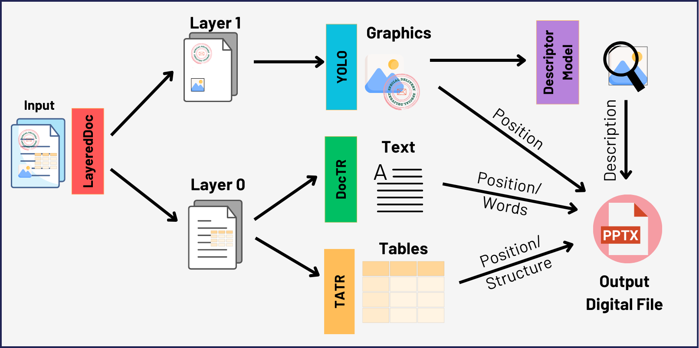
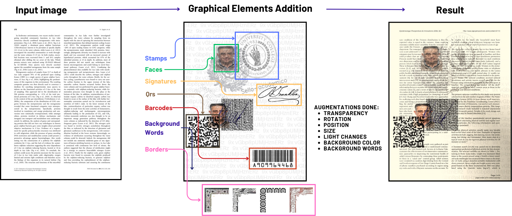
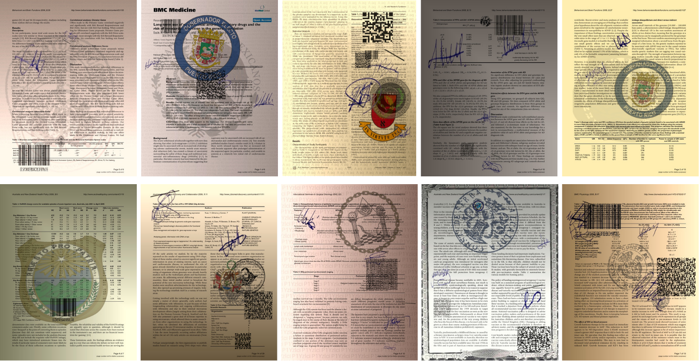
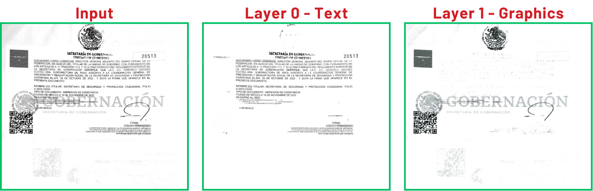
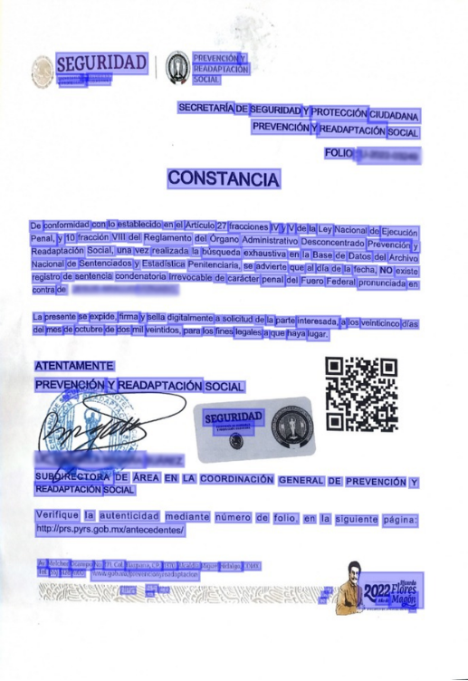
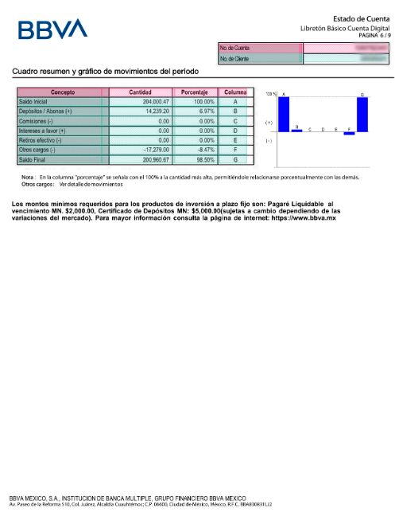
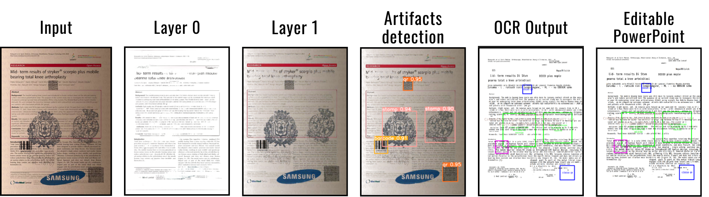

Pipeline
Our work focuses on converting complex physical documents into an editable digital format. The figure below outlines our pipeline, which separates textual and graphical elements before processing them.
Dataset Creation
To train our models, we created a dataset composed of real and synthetic documents. The synthetic dataset enables robust learning by simulating various real-world document conditions.
Examples from our synthetic dataset include variations in lighting, added graphical elements, and text obfuscation to mimic real documents.
LayeredDoc
We implemented LayeredDoc to separate textual and graphical elements from scanned documents. This allows better processing by OCR and object detection models.
DocTR (OCR)
To extract text from the document, we used DocTR, a state-of-the-art OCR model that detects and recognizes text with high accuracy.
Table Structure Recognition
For table detection and structure extraction, we used TATR, a model trained to identify and correctly format tables within a document.
Inference of the Whole Pipeline
Here is an example of a complete document processed through our pipeline, integrating all models to generate an editable output.
Demo Video
A demonstration of how to use our web application will be shown here.